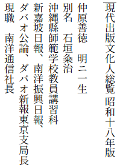

ルソン北部1940年代前半の地誌¶
仲原善徳「比律賓紀行」¶
日本軍の進攻前後のルソン島北部はどのような場所だったのか。手がかりとなる紀行文や案内というのは意外に少ないようである。ほとんどの場合は「南洋」開発の一部としてバギオ市周囲などが概念的に扱われているだけである。そこで、仲原善徳  1 の「比律賓紀行」、南満洲鉄道株式会社東亜経済調査局交通班の「比律賓自動車道路の解説」 2 に基づいて、かんたんな地誌図を作ってみた。
{kind=link}
「比律賓紀行」は、フィリピン「諸島の風物、農産、住民、殊にそこで活動する日本人のことがかう手に取るやうに分る本などありはしない。殊にそれが太平洋戦争の前十年、廿年のことに関するから今と比較して一層興味が深い」と、木下杢太郎に評された [mokutaro] 。
ルソン島北部では他地域に比べて邦人の「定着志向」が強い 3 ことが特徴だった。それは仲原善徳が行く先々で出会った人々の姿にも見ることができる。「比律賓紀行」の校了が昭和16年12月2日、校正進行中の12月8日に「皇軍の精鋭は呂宋北部のアパリを攻略した」 4 。ルソン島北部の邦人たちは 「生涯の中にかゝる日に際会し得ること」 に、正直、それぞれにどのような感情をいだいただろう。
- 1
仲原善徳とフィリピンのかかわりについては、仲程昌徳、「『南洋情報』とその時代」、琉球大学学術リポジトリ、 http://hdl.handle.net/20.500.12000/2384 に詳しい
- 2
米国人によるドライブ・ガイドの抄訳らしいが、出典は不明である。
- 3
(参考): 小島勝、「南方関与の多重性と教育の論理」, https://repository.kulib.kyoto-u.ac.jp/dspace/bitstream/2433/187643/1/ias_027_075.pdf
- 4
仲原善徳, 「比律賓紀行」のはしがき
- mokutaro
木下杢太郎、「南方に関する書」、日本産業新聞昭和17年9月7日
{kind=link}
歩兵第179大隊第2中隊(矢野隊)陣中日誌抄ー10月 に戻る
ルソン島北東部¶
{kind=link}
ルソン島北東部。¶
ルソン島北西部¶
{kind=link}
ルソン島北西部：バギオから北の範囲。¶
別図：アシン川谷¶
{kind=link}
アシン河谷。第14方面軍将兵と在留邦人の最終避難地。¶
マゴックの先の難所、アシン河吊橋の位置は推定。
ルソンにいた在留邦人で軍務に動員されなかった老人、婦女子は約八千名 5 という。マニラ付近の邦人で軍務にない者、約2000名は、1944年末から1945年1月中旬にかけてバヨンボンに集結するよう指示された。しばらくはバヨンボン北のボンファル(Bonfal)地区で農地を借りるなどして自治自活態勢を整えた。4月にはバギオからの約500人も加わった。
しかし、5月下旬にはそこにもいられなくなって、キャンガン(Kiangan)、さらに、パクダン(Pacdan)へと、ほとんどは徒歩で移動させられた。運が良ければキャンガンまでは軍のトラックに乗せてもらえたが、その先の山道は誰も徒歩でしか行けなかった。7月以降は、アシン川(Asin River)谷、あるいは、ホヨ(Joyo)方面の山中に入った。移動に遅れた人たちなど一部はマゴック(Maggok)から南の峡谷に身をひそめた 6 。これらの逃避行の凄惨な体験は数々の手記や聞書きに残されている。
第14方面軍司令部も、キャンガン、ハバンガン(Jabangan)、最後はアシン川谷「第三レストハウス」対岸の「大和基地」と転々とした。各師団、兵団についても戦況とともに移動を続けたうえ、地図もはっきりしない山中のことなので、図に記した位置は戦史の記述に拠ったものの正確なものではない。
なお、手記に頻繁にでるトッカン(Tukucan, Tucucan)の位置は新しい地図で検索するとここに示すものと随分ちがっている例がある。同じ名前の小集落が狭い範囲に点在するのはフィリピンでは良くあることである。マゴック(Maggok)の名がついた集落なども同地域に複数ある。
1930年代の米軍由来の地図にある地名位置が戦争体験談や戦史の要図と良く一致するので、ここでは、次の２つの地図を参照して作った。2は防衛研究所、比島決戦シリーズ、「捷号陸軍作戦<2> ルソン決戦」の付図第4「尚武集団戦域の要域図」のベースとなっている。
Northern Luzon, Philippine Islands, Southern sheet, 1:200 000, H. Otley Beyer Map Collection, National Library of Australia, http://nla.gov.au/nla.obj-580717130
昭和十三年版(1938) 呂宋島附近二十万分一地誌圖(スタンフォード大学 EarthWorks) , https://searchworks.stanford.edu/view/9689700
- 5
佐々木 靖. コルディリェラの日系人. 帝京大学短期大学紀要 = Bulletin of Teikyo University Junior College. (32):2012,p.9-62. https://ndlsearch.ndl.go.jp/books/R000000004-I023584291 から孫引き
- 6
西本正巳、「在留邦人・山奥へ大移動」、曙光新聞復刊第6号、1992.8.1、他による。
ルソン北部の在留邦人数¶
1941年頃のフィリピンの行政区と1943年8月頃のルソン北部の在留邦人数。¶
1940年の推計ではフィリピンの人口は約千六百万人余である。うち外国人は十八万で、中国人が七割を占めている [nanyo40] 。1943年時点で、軍関係者を除く在留邦人は二万九千人余である。うち二万人ほどはミンダナオ島ダバオでのマニラ麻栽培事業に関係している。マニラには約六千人である [jarm43] 。ルソン北部となると、バギオ市周辺を別としてその数はきわめて少なかった。図には軍政監部資料の昭和18年調査にある数字を示すが、報告書によってばらつきがある。在留邦人数は各地の日本人会が当時把握していた限りの人数である。
- nanyo40
『南洋』,大阪市産業部貿易課,1940. 国立国会図書館デジタルコレクション https://dl.ndl.go.jp/pid/1878904 (参照 2024-02-17)
- jarm43
「１．フィリピン独立関係／１０．フィリピン在留邦人調」JACAR（アジア歴史資料センター）Ref.B02032953800、大東亜戦争関係一件／比島独立ト日比同盟条約締結関係（A-7-0-0-9_46）（外務省外交史料館）
歩兵第179大隊第2中隊(矢野隊)陣中日誌抄ー10月 に戻る
2024年4月18日